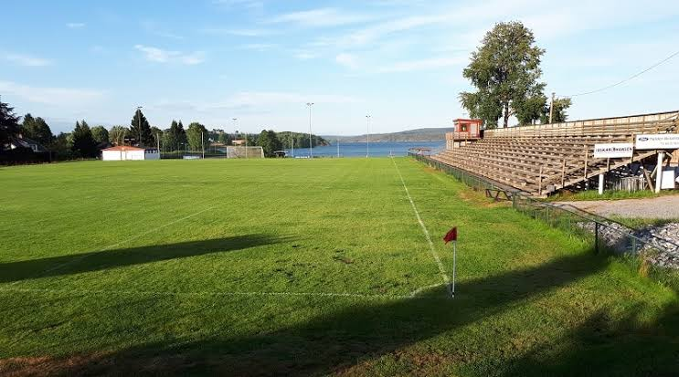

En ball, to mål og ingen voksne – hvor ble det av løkka?
Før samlet barna seg på løkka med en ball og spilte til mørket kom. Ingen faste treningstider, ingen påmelding og ingen voksne som bestemte. I dag er fotballen mer organisert enn noen gang. Men hva skjedde egentlig med den spontane fotballgleden i Halden?[cite: 2]

Fra barndommens grusbane til dagens stadion
For Dag Morten, som i dag jobber som vaktmester ved Tistedalen stadion, begynte fotballgleden rett utenfor barndomshjemmet[cite: 2].
Han vokste opp like ved stadion. Etter skolen samlet barna i nabolaget seg på grusbanen, fant fram en ball og spilte til kvelden[cite: 2].
Den gangen var det verken faste treningstider eller organiserte øvelser. Barna bestemte selv hvem som skulle spille, hvordan lagene skulle fordeles, og når kampen var over[cite: 2].
– I løkkefotballen sparket vi bare ball. Vi tenkte ikke på noe annet[cite: 2].
I dag ser Dag Morten en helt annen fotballhverdag. Barn begynner tidligere med organisert trening, og klubbene legger større vekt på utvikling, teknikk og inkludering. Men han mener ikke at alt nødvendigvis var bedre før[cite: 2].
Ikke alle ble valgt på løkka
Selv om løkkefotballen forbindes med frihet og fellesskap, hadde den også en bakside[cite: 2].
Dag Morten husker hvordan barna valgte lag, og hvordan de som ikke var like gode, ofte ble stående igjen til slutt[cite: 2].
Han mener den organiserte fotballen har blitt flinkere til å ta vare på barn med ulike ferdigheter[cite: 2].
Dermed oppstår et interessant spørsmål: Har fotballen mistet noe av spontaniteten, men samtidig blitt mer inkluderende?[cite: 2]
– Ting er mye mer organisert
Mari, som leder fotballavdelingen i Tistedalens Turn- og Idrettsforening (TTIF), kjenner igjen utviklingen[cite: 2].
– Løkkefotball er egentlig ikke et begrep vi bruker så mye lenger. Nå er det mer organisert[cite: 2].
Hun beskriver løkkefotball som uorganisert spill mellom venner og bekjente, uten faste treningstider eller krav om oppmøte[cite: 2].
Samtidig peker hun på at mange ungdommer kan oppleve den organiserte fotballen som for seriøs. I TTIF forsøker klubben å gi plass til ulike ambisjoner. Noen ønsker å trene flere ganger i uka, mens andre vil spille fotball mest for det sosiale[cite: 2].
Klubbens baner er åpne for fri bruk når de ikke benyttes til organisert aktivitet. Likevel forteller Mari at hun ikke ser store grupper med barn som spiller på egen hånd[cite: 2].
– Jeg er her av og til i helgene, og da er det noen som flyr her nede og spiller. Men det er ikke kjempestore grupper[cite: 2].
Løkkefotballen har flyttet på seg
En tidligere kultursjef, som har bodd i Halden i 37 år, mener løkkefotballen gradvis har fått mindre plass i barnas hverdag. – Løkkefotballen forsvinner jo mer og mer, og aktiviteten blir mer organisert[cite: 2].
Samtidig understreker han at den frie fotballen ikke nødvendigvis er borte. Tidligere møttes barna på åpne løkker i boligområdene. I dag foregår mye av den samme aktiviteten på skoleområder, i ballbinger og på idrettsanlegg[cite: 2].
Han trekker blant annet fram Låby skole og åpne deler av fotballanleggene i Halden som steder der barn fortsatt spiller uten organiserte treninger[cite: 2].
Også lekeplassene har endret seg. Noen gamle løkker har grodd igjen, mens andre har blitt oppgradert til moderne nærmiljøanlegg. Dermed er det ikke bare fotballen som har forandret seg, men også stedene der barn møtes[cite: 2].
Trenger barn fortsatt løkka?
I dag kan barn begynne med organisert fotball allerede som fire- eller femåringer. Foreldre følger opp treninger, kamper og aktiviteter, mens fritiden i større grad planlegges[cite: 2].
Den tidligere kultursjefen mener likevel at den frie leken fortsatt har en viktig funksjon. På løkka bestemmer barna reglene selv. De lærer å samarbeide, løse uenigheter og skape aktivitet uten at voksne organiserer alt[cite: 2].
Samtidig viser erfaringene fra TTIF at organiserte klubber kan gi barn trygghet, tilhørighet og muligheter de kanskje ikke hadde fått på den gamle løkka[cite: 2].